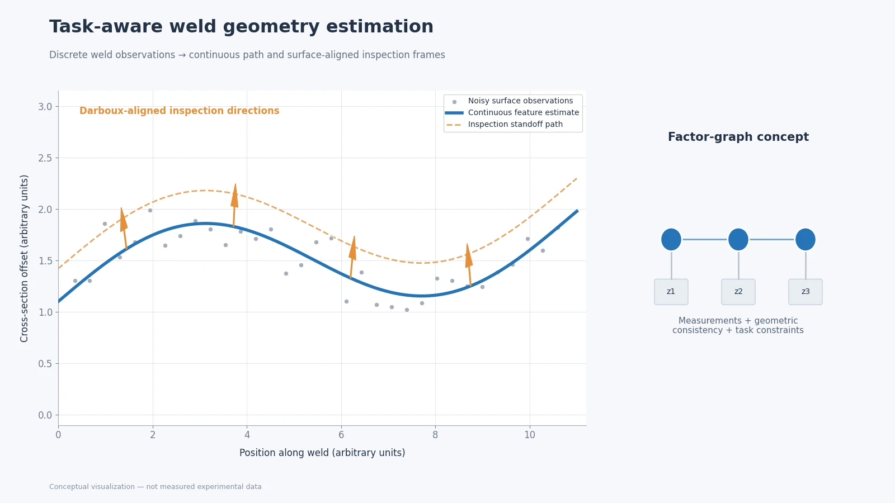

The problem
Automated weld inspection requires more than detecting points on a surface. The robot needs a continuous description of the weld feature and a reliable sensor orientation along the inspection path. In practice, the available measurements are discrete and noisy, and small geometric errors can compromise inspection quality.
Approach
I developed a Darboux-constrained Gaussian-process factor graph that jointly estimates feature positions, Darboux-frame orientations, and curvatures. The graph combines measurements with geometric consistency constraints so observations reinforce one another instead of being treated as isolated points.
Task-aware estimation
The estimator also incorporates inspection path-planning objectives. Surface geometry, curvature, and planning requirements become part of one structured optimization problem, connecting the representation being estimated to the downstream task that will use it.
Outcome
The system achieved sub-millimeter positional accuracy and sub-degree orientation accuracy for inspection path generation. This work is being prepared as a first-author manuscript, “Darboux-Constrained Gaussian-Process Factor Graphs for Continuous Surface Feature Estimation,” for submission to Robotics and Automation Letters (RA-L).
